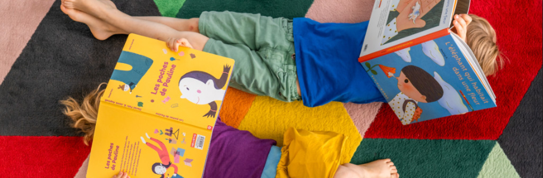

Apprenez à nous connaître !
Janod est une société française spécialisée dans les jeux traditionnels et jouets en bois mais aussi en carton. Janod propose des gammes colorées et originales qui accompagnent les enfants de la naissance à 12 ans.
Des jouets qui ont toutes les qualités : robustes, chaleureux, simples et conviviales. De plus les produits Janod sont en parties fabriqués avec du bois issu de forêt gérées durablement, et nos livraisons se font uniquement en France et en Belgique pour rester respectueux de la nature.